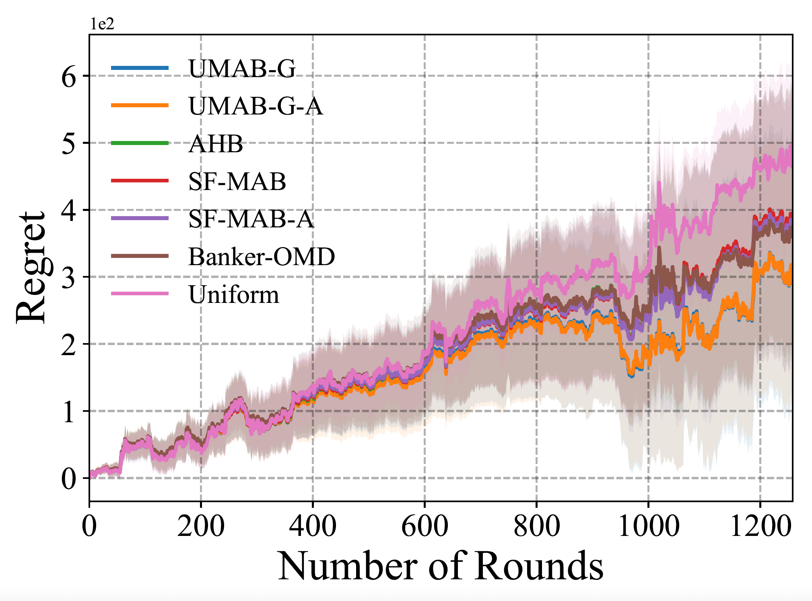
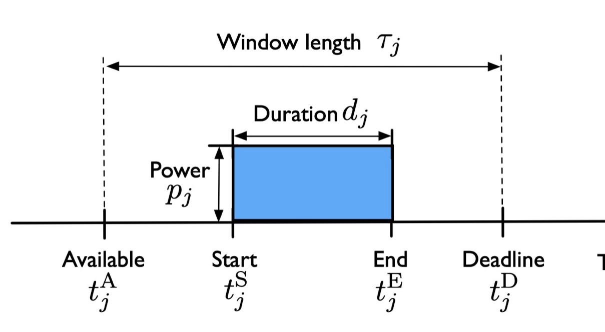
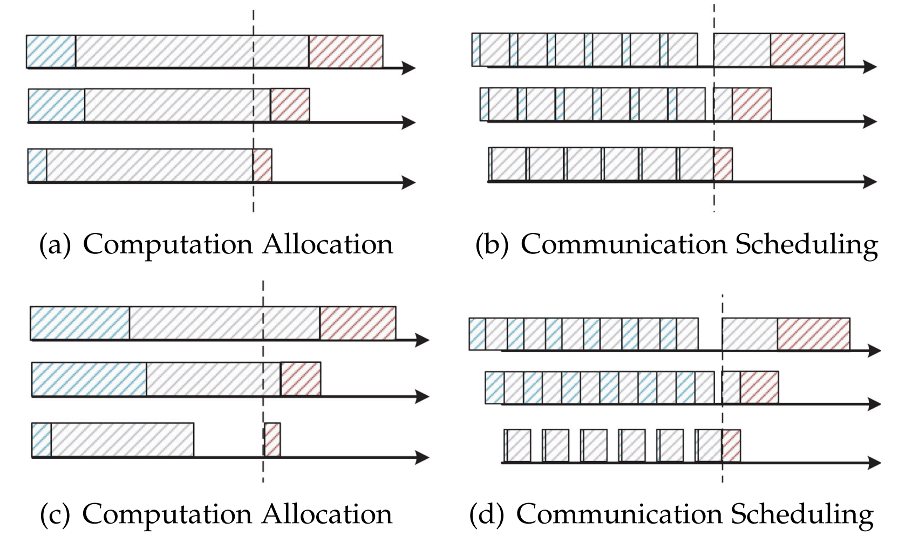

Mingyu Chen
About Me
Hi! I am a first second third year Ph.D. student in the Department of Electrical & Computer Engineering at Boston University. I am fortunate to work with Prof. Xuezhou Zhang. Prior to this, I obtained my bachelor’s degree from Huazhong University of Science and Technology.
My research lies in the areas of Reinforcement Learning, Online Learning, Bandits and Optimization. Currently my focus is in making Interactive Decision Making parameter-free and scale-free, and developing efficient and unified algorithms for scientific and engineering applications.
Research Interests
- Online and Reinforcement Learning
- Algorithmic game design
- Optimization and Scheduling
News
- [Aug. 2023] Our CDC 2022 paper “Scheduling and pricing non-preemptive electric loads: A convex approach” is selected for the Best Paper Prize by the Energy Systems Technical Committee (formerly the Smart Grid TC) of the IEEE Control Systems Society (CSS).
Publications
-

-
 CDCIEEE Conference on Decision and Control (CDC), 2022
-
 TMCIEEE Transactions on Mobile Computing (TMC), 2022.
Services
Conference Reviewers
Neural Information Processing Systems (NIPS) 2023 International Conference on Learning Representations (ICLR) 2024
Powered by Jekyll and Minimal Light theme.